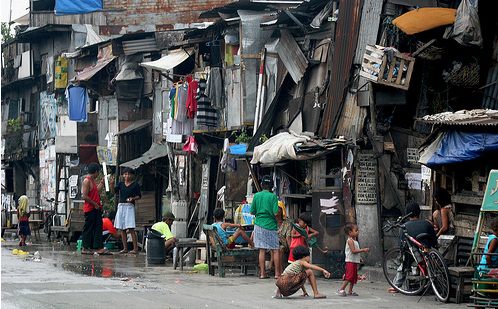
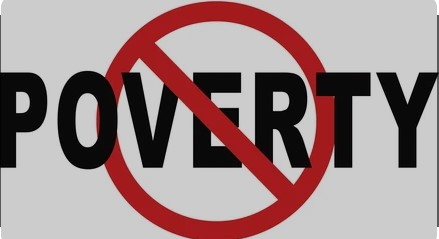

What is poverty?
Poverty is defined as a lack of funds to meet basic needs such as food, clothing, and shelter. Poverty, on the other hand, is much more than simply not having enough money.
Poverty is defined as a lack of funds to meet basic needs such as food, clothing, and shelter. Poverty, on the other hand, is much more than simply not having enough money.

Cyclical Poverty - This type of poverty refers to poverty that is happening throughout the country but is limited in duration. This type of poverty is the inability to provide the necessities due to a national catastrophe, poor agricultural planning, shortage of resources, etc. Additionally, the prices rise due to scarcity of resources.
Collective Poverty - In comparison to Cyclical Poverty, Collective Poverty involves permanent insufficiency of resources to meet the means to provide necessities. This type of poverty may be transmitted from generation to generation, with parents passing their poverty to their children.
Collective Poverty is usually related to economic underdevelopment. The total resources of nations would be insufficient to support the population adequately even if resources are distributed equally.
Concentrated Collective Poverty - In areas with rich resources to provide basic needs to its population, there are particular demographic groups that are vulnerable to long-term poverty. In areas abandoned by industry, and in areas where agriculture or industry is inefficient and cannot compete profitably, there are found victims of concentrated collective poverty. These people, like those afflicted with generalized poverty, have higher mortality rates, poor health, low educational levels, and so forth when compared with the more affluent segments of society.
Case Poverty - Similar to Collective Poverty, Case Poverty is the lack of a group or individual to provide basic necessities for themselves and their families even in areas with relatively rich resources around them. This case is due to the individual’s inability to gain resources mostly due to disability, mental health issues, chronically ill, etc.

There are a lot of issues in the world, but for poverty it is also experienced. Some experience hunger, illness, and poor sanitation are all causes and effects of poverty. Not being able to afford food is one way to say that you are poor, but being poor also means being unable to afford food or clean water. These problems or issues are often interrelated which means that not one problem occurs only once.

These are the key programs to help reduce poverty. Click on Learn More.

In general, poverty incidence in highly urbanized cities (HUCs) was relatively lower compared to many of the provinces in the country. In HUCs within NCR, the following cities registered significant increases in their poverty incidence among families from 2018 to 2021: Cities of Malabon, Valenzuela, Las Piñas, Makati, Muntinlupa, Parañaque and Taguig. For HUCs outside NCR, the Cities of Lapu-Lapu, Butuan, and Mandaue registered the highest significant increase, while Zamboanga City was the only HUC with a significant decrease from 6.5 percent in 2018 to 3.3 percent in 2021. (PSA, 2021)

The 1st Semester 2018 official Poverty Statistics released by the Philippine Statistics Authority(PSA) shows that Baguio City has a poverty incidence of 2.8 among families or 2, 640 households were within the poverty threshold. The 2018 annual Per Capita Poverty threshold (in PHP) is 11,820, or a family needs Php 47,280 annually to sustain the basic needs of an average household size of 4. (PSA, 2018)

The cruel reality of the Philippines current state economically has affected the nation wherein it hinders growth and nation-building. With the right track in mind, Filipinos can tackle poverty by implementing assuring regulations and reallocating public spending on programs for the poor.